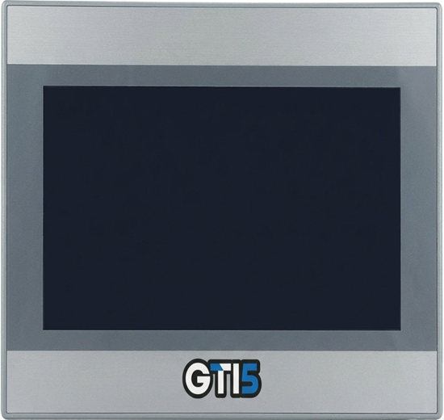

A tela do operador, os sensores HI e os itens que completam o pedido e evitam a segunda viagem.
Um CLP sozinho não opera nada: alguém precisa ver e comandar o processo, o equipamento precisa de energia, a eletrônica precisa de uma caixa, e a equipe do cliente às vezes precisa aprender. Nesta etapa você conhece a IHM GTI5 e as IHMs de revenda, os sensores THT863 e HPS850, as fontes, a caixa GEM100 e o kit RTK510, e monta um pedido que não esquece nada.
Tempo estimado: 1h30 (leitura, quiz e preparo dos exercícios do encontro).
A IHM (Interface Homem-Máquina) é uma tela física que dá ao operador uma visão clara da máquina ou do processo: mostra informações guardadas no CLP que não seriam visíveis de outro jeito e tem botões, valores e históricos para informar e comandar. O supervisório faz algo parecido, mas é software: roda em computadores da rede (HIscada Pro) ou na nuvem (Portal de Telemetria), e vários computadores podem acessar as mesmas telas.
| IHM | Supervisório | |
|---|---|---|
| O que é | Hardware: uma tela touch screen | Software em computador ou na nuvem |
| Onde fica | Na porta do painel, junto da máquina | Na sala de controle, em qualquer computador da rede, ou na internet |
| Quem usa | O operador daquela máquina | Supervisores, gestores, várias pessoas ao mesmo tempo |
| Na HI | GTI5 (linha própria); Weintek e Veichi (revenda) | HIscada Pro; Portal de Telemetria (Etapa 7) |
A IHM é o painel do carro: mostra o que importa a quem está dirigindo, ali na frente. O supervisório é a central de uma frota: vê todos os carros ao mesmo tempo, com histórico e alarmes, de longe.
Muitos projetos têm os dois: IHM para o operador na máquina e supervisório para a gestão. Pergunte: "quem precisa ver os dados, e onde essa pessoa está?"
Fontes: Treinamento de Produto, p. 10, 19 e 23.

A série GTI5 é a IHM touch screen da HI, com telas TFT de alta resolução e construção robusta para ambiente industrial. É a preferência na oferta de IHM.
| Modelo | Tela | Resolução |
|---|---|---|
| GTI5 4.3" | 4,3 polegadas | 480 × 272 |
| GTI5 7" | 7 polegadas | 800 × 480 |
| GTI5 10.1" | 10,1 polegadas | 1280 × 800 |
| GTI5 15.6" | 15,6 polegadas | 1920 × 1080 |
O SmartManagerPro é muito parecido com o EasyBuilderPro, o software das IHMs Weintek (não é o mesmo software). Para quem já programa Weintek, o argumento é: "você se adapta rápido". Se o cliente já usa Weintek, pergunte quais recursos ele usa e confirme com o suporte interno se a GTI5 atende antes de propor a troca.
Não existe uma lista fixa do que a GTI5 faz ou não em relação à Weintek. Não prometa compatibilidade de recursos sem a confirmação do suporte.
Fontes: Catálogo Geral, p. 12; decisões de Gabriel sobre a GTI5 e o SmartManagerPro (Etapa 1, revisões de 29/10 e 04/11/2026).
Além da GTI5, a HI revende IHMs touch screen de dois fabricantes, em várias opções de tamanho:
Os softwares de programação dessas IHMs podem ser baixados no site da HI e usados gratuitamente.
O Treinamento de Produto também cita a MMI700, uma IHM alfanumérica (mostra texto e números, sem gráficos) fabricada pela HI e programada no software OPPE. Ela não aparece no Catálogo Geral. [CONFIRMAR] se a MMI700 ainda é vendida
Seja transparente: Weintek e Veichi são revenda, não fabricação HI (Etapa 1). E a preferência é ofertar a GTI5; as de revenda entram quando o cliente pede uma marca específica ou quando a GTI5 não atende a necessidade, com confirmação do suporte.
Fontes: Treinamento de Produto, p. 10; Catálogo Geral (a MMI700 não consta); decisões de Gabriel sobre revenda e preferência pela GTI5 (29/10/2026).
Quando o cliente pede uma IHM "de baixo custo" ou "econômica", não responda com preço nem com "a mais barata". Descubra o que ela precisa fazer (por exemplo, só exibir uma temperatura) e qual o tamanho mínimo; indique a opção que atende, e o orçamento do setor de vendas mostra os valores.
Fontes: Catálogo Geral, p. 12; exercícios 11, 13, 16 e 20 do Treinamento de Produto (situações).
Transmissor analógico a dois fios. Mede a temperatura ambiente (-20 a 80 °C) ou a umidade relativa do ar (0 a 100%) e manda o valor por uma única saída 4 a 20 mA. Uma chave seleciona o que medir: só temperatura, só umidade ou as duas, alternando na saída. Alimentação de 12 a 30 V DC.
No CLP
Ocupa uma entrada analógica (Etapa 2).
Sensor magnético (efeito Hall), usado com um ímã. Detecta quando a máquina passa por uma posição e manda um sinal para o CLP contar uma volta. Muito usado no bombeio mecânico de petróleo, para contar os ciclos. Sem partes móveis: alta robustez e longa vida útil. Também serve como sensor de posição, movimento e contagem de objetos.
No CLP
Ocupa uma entrada digital.
Em óleo e gás, o HPS850 faz parte da solução de bombeio mecânico, segmento em que a HI tem mais de 6 mil painéis na Petrobras (Etapa 1). O THT863 é a resposta rápida para "quero monitorar a temperatura e a umidade de uma sala".
Fontes: Catálogo Geral, p. 24 e 37; Treinamento de Produto, p. 17.
As fontes convertem a energia da tomada (127 V ou 220 V AC) em corrente contínua, normalmente 24 V DC, para alimentar o CLP, os módulos de I/O, a IHM e os sensores (Etapa 2).
Fixação em trilho DIN, entrada full range (90 a 264 V AC), saída de 24 V DC, fusível na entrada e proteção contra curto-circuito e sobretensão na saída. Modelos por potência:
MDR20-24 (20 W), MDR40-24 (40 W), MDR60-24 (60 W), EDR75-24 (75 W), EDR120-24 (120 W) e NDR240-24 (240 W).
Controlador inteligente de carga com bateria de lítio (LiFePO4) de 12 V incorporada. Alimentado por 18 a 26 V DC ou painel fotovoltaico, mantém o equipamento ligado onde a rede elétrica falha ou não existe. Pode desligar a própria saída por tempo programado (de segundos a horas) e tem saída de status.
O Treinamento de Produto cita ainda uma fonte própria que funciona como no-break e controlador de carga, a BPU508 (saída de 13,8 V DC). O catálogo atual traz a SBC513. [CONFIRMAR] se a BPU508 ainda é vendida
A potência da fonte precisa cobrir o consumo de tudo o que ela alimenta (CLP, módulos, IHM, sensores). Esse dimensionamento é técnico: leve a lista de equipamentos ao suporte em vez de escolher a fonte "no olho".
"Onde não tem energia" é uma pergunta de ouro: estações isoladas, poços, pontos de telemetria. A SBC513 com painel fotovoltaico pode ser a diferença entre a solução funcionar ou não.
Fontes: Catálogo Geral, p. 26; Treinamento de Produto, p. 18.
A linha GEM100 é uma família de caixas modulares para acomodar módulos eletroeletrônicos em geral. É feita de um perfil de alumínio extrudado, desenvolvido exclusivamente para ela, e permite montar os módulos na vertical, na horizontal ou por um backplane (placa de ligação no fundo).
| Modelo | Dimensões (L × A × P) |
|---|---|
| GEM100-030 | 30 × 89 × 93 mm |
| GEM100-050 | 50 × 89 × 93 mm |
| GEM100-085 | 85 × 89 × 93 mm |
| GEM100-110 | 110 × 89 × 93 mm |
Grau de proteção IP30, alumínio e poliestireno, fixação em trilho DIN TS35 ou painel.
A GEM100 interessa a quem desenvolve ou monta eletrônica e precisa de uma caixa de padrão industrial para trilho DIN. [CONFIRMAR] perfil típico de cliente da GEM100 e se ela é vendida avulsa
Fonte: Catálogo Geral, p. 28.
Os kits RTK510 servem para treinar programação de CLP baseada na norma IEC 61131 (a mesma do HIstudio, Etapa 4). Numa bancada só, eles trazem:
O RTK510 combina com o HIstudio gratuito e com os cursos da HI University: é a oferta para quem diz "a minha equipe precisa aprender a programar". Bom também para escolas técnicas e para o integrador que está começando com a linha HI.
Fonte: Catálogo Geral, p. 14 (texto e quadro "Recursos disponíveis") e p. 40.
Antes de mandar a necessidade para o orçamento, passe por esta lista com o cliente:
| Pergunta | Se a resposta for "não" ou "não sei"… |
|---|---|
| Tem fonte de 24 V DC no painel, com potência sobrando? | Inclua uma fonte (o suporte dimensiona). |
| Tem energia elétrica no local? | Avalie a SBC513 com painel fotovoltaico. |
| O operador precisa ver ou comandar na máquina? | Inclua uma IHM (GTI5 primeiro). |
| Os sensores já existem? | Veja se THT863 ou HPS850 atendem; os demais vêm de outros fabricantes. |
| Como o técnico vai se conectar em campo? | USB721, se o equipamento for serial (Etapa 5). |
| A equipe já sabe programar? | HIstudio gratuito, HI University, kit RTK510, ou a engenharia da HI entrega pronto. |
| Vai mandar dados pelo 4G? | Chip e plano de dados (HI Connect) e antena (Etapa 5). |
Completar o pedido não é "empurrar produto": é evitar que o projeto pare na instalação por falta de uma fonte, de um cabo de ligação ou de quem saiba programar. O cliente percebe a diferença.
Fontes: itens desta etapa e das Etapas 2, 4 e 5.
| O cliente pergunta | Como responder |
|---|---|
| "Que IHMs vocês têm?" | A GTI5, linha própria, de 4,3" a 15,6", com Ethernet, RS232, RS485 e USB. Também revendemos Weintek e Veichi. |
| "Uso Weintek há anos. Por que trocaria?" | A GTI5 é da linha própria e o SmartManagerPro é muito parecido com o EasyBuilderPro, então a adaptação é rápida. Quais recursos você usa? Vou confirmar com o suporte se a GTI5 atende. |
| "Preciso de uma tela de pelo menos 10 polegadas ligada por RS232." | A GTI5 10.1" (ou a de 15,6") tem porta RS232. Anote o modelo do CLP para confirmar a comunicação. |
| "Vocês têm sensor de temperatura?" | O THT863, que mede temperatura ambiente ou umidade e manda 4 a 20 mA. Para outras faixas ou tipos (PT100, por exemplo), anote a necessidade e confirme com o suporte. |
| "No local não tem energia." | A SBC513 mantém o equipamento ligado com bateria e painel fotovoltaico. O suporte dimensiona com você. |
| "Quanto custa a IHM?" | Depende do modelo e do tamanho. Com a necessidade anotada, siga o processo de orçamento. |
Confira o que ficou. A correção é na hora, com a explicação de cada resposta. Acerte pelo menos 80% antes de marcar a etapa como concluída.
Traga preparado (agora com o pedido completo: CLP, IHM, fonte e o que mais faltar):
Casos adaptados dos exercícios 6, 11, 13 e 20 do Treinamento de Produto.